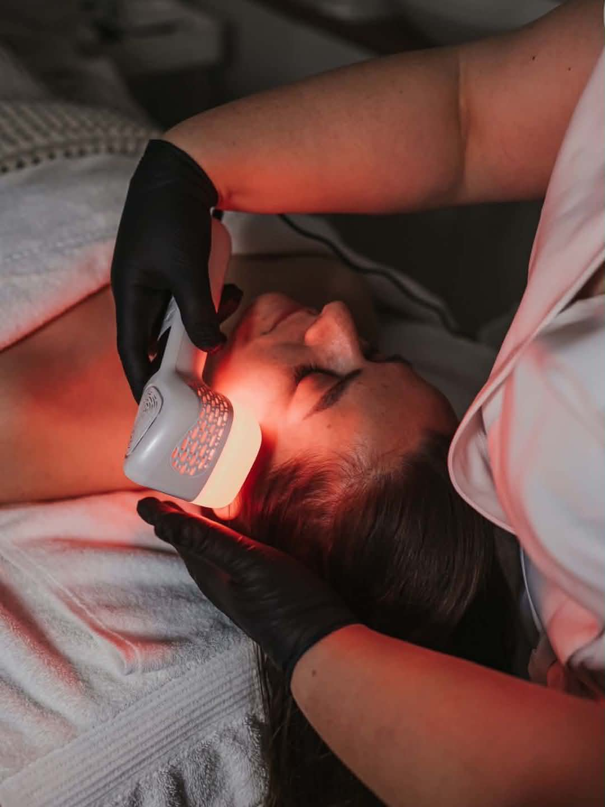
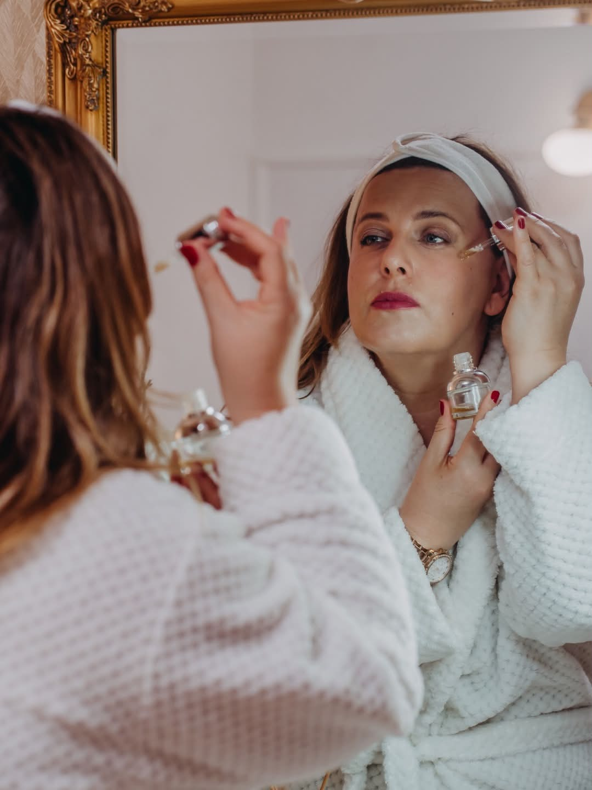

Autorská metoda
Skin Balance Method
Autorská metoda postavená na 15 letech práce s pletí. Vaše pleť nepotřebuje další sérum ani relaxační rituál. Potřebuje systém a pořadí.

Co je Skin Balance Method
Skin Balance Method propojuje principy korneoterapie s moderním přístupem k péči o pleť.
Prvním krokem je obnova a stabilizace kožní bariéry. Zdravá bariéra je totiž základem krásné a odolné pleti.
Stejně důležité je ale vytvořit takové podmínky, aby pleť měla sílu na změnu. Pokud chceme pleť stimulovat, musí být připravená. Musí mít dostatečnou regenerační kapacitu, aby ošetření zvládla a dokázala na něj správně reagovat.
Proto v mém studiu nezačínáme vždy tím nejsilnějším ošetřením. Začínáme tím, co vaše pleť potřebuje právě teď. Díky tomu mají jednotlivé kroky smysl, navazují na sebe a přinášejí dlouhodobé výsledky.
Například u klientky s citlivou a dehydratovanou pletí jsme nejprve několik týdnů pracovali na obnově bariéry a hydrataci. Teprve poté jsme zařadili aktivnější ošetření, díky čemuž pleť reagovala klidně, bez podráždění, a výsledkem byla viditelně sjednocená, pevnější a zdravější pleť.
Pro koho
Mění se obsah fází, ne logika
Funguje stejně pro akné v dospělosti, rosaceu a reaktivní pleť, citlivou pleť i zdravé stárnutí. Mění se obsah jednotlivých fází, ne logika.
Diagnostika napřed, pak stabilizace, regenerace, biostimulace — vždy v tomhle pořadí.
Čtyři fáze
Systém, ne náhodná procedura
Každá fáze otevírá další. Žádná se nedá přeskočit.
Diagnostika
Než se dotknu vaší pleti, potřebuju jí rozumět. Typ, aktuální stav, kožní bariéra, citlivost, spouštěče, hormonální kontext, dosavadní péče. Z toho vychází plán. Bez diagnostiky není strategie. Jen tipování.
Stabilizace
Podrážděná a oslabená pleť nereaguje na nic, co přijde potom. Proto ji nejdřív zklidním a obnovím bariéru. Tahle fáze bývá pomalá a bez vaší spolupráce doma to nejde. Ale je nepřeskočitelná.
Regenerace
Když je pleť stabilní, podpořím její vlastní regenerační schopnost. Šetrně a dlouhodobě. Cílem není rychlý výsledek, ale pleť, která drží — a má dost zdravě fungujících buněk, aby unesla silnější podněty.
Cílená biostimulace
Teprve stabilní a regenerovaná pleť dokáže odpovědět na silnější stimulaci. Peptidy, exozomy, PDRN, mikrojehličkování. Tohle většina žen hledá hned na začátku. Jenže bez předchozích fází je to jen drahá zátěž. Proto u některých klientek říkám: ještě ne. A vysvětlím proč.

Domácí péče je polovina práce
Ošetření trvá hodinu. Vaše péče pracuje 30 dní v měsíci.
Pokud spolu nejsou sladěné, jedna druhou rozbíjí. Proto domácí péči nastavuju v každé fázi znovu — podle toho, kde vaše pleť právě je, ne podle toho, co je v akci.
Pracuji s produkty Natinuel, DIBI Milano a Thessera, které volím podle stavu a fáze, ne podle značky.
První návštěva
Co dostanete
Komplexní diagnostika pleti
Woodova lampa, anamnéza, vyhodnocení kožní bariéry.
Pochopení vaší pleti
Co se s pletí děje a proč — ne odhadem, ale z toho, co vidím.
Plán péče s konkrétními kroky
Včetně domácí péče sladěné s aktuální fází.
Realistický odhad
Kam se dá s pletí dojít a v jakém čase.
Pokud máte pocit, že už nevíte, co vaše pleť potřebuje, pravděpodobně vám nechybí další produkt. Chybí pořadí.